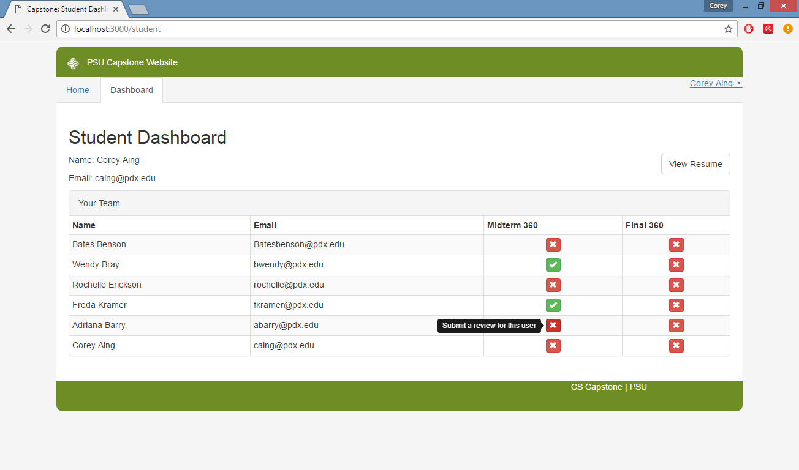
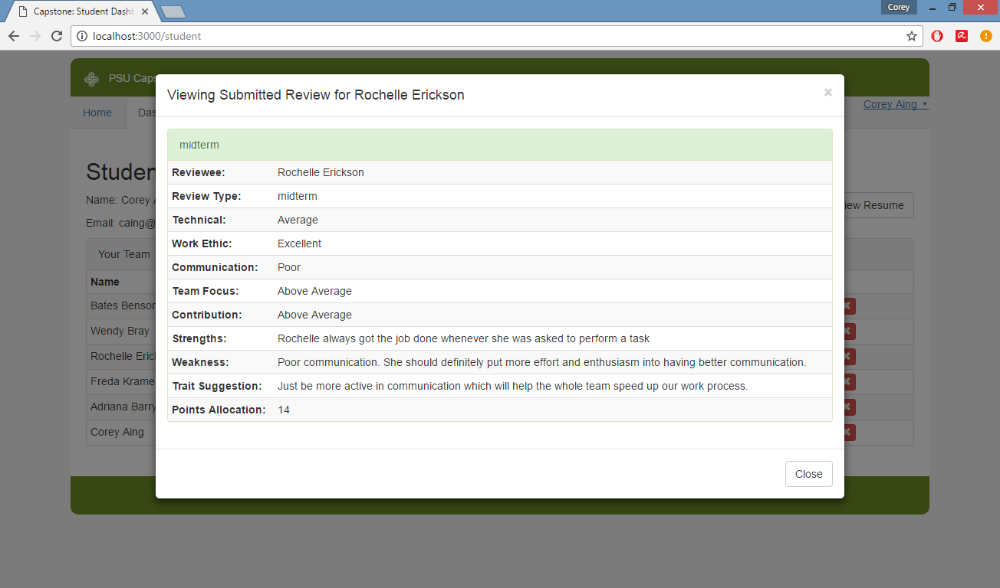
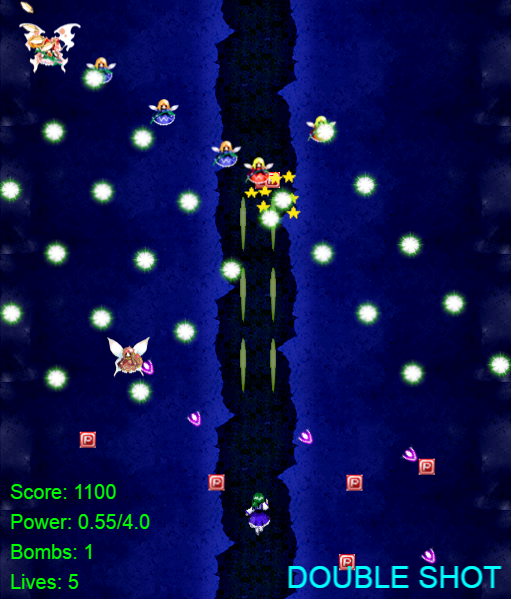
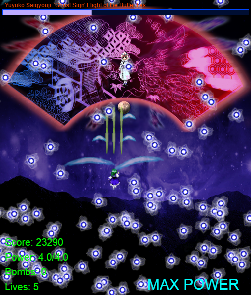
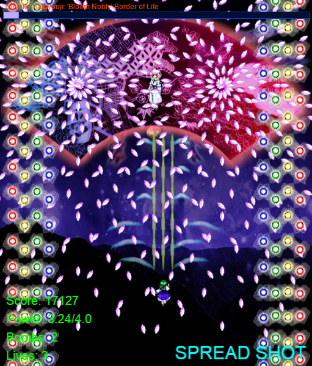

A Web Application I worked on for my project in the Computer Science Capstone Program at Portland State University in a team of 7 members total. The project was proposed from the head of the CS Department in the Spring 2016. The purpose of the app was to allow students participating in the program to fill in quick and clean digital forms required for the program that used to be done by hand and was a long process. This allowed the Professor to easily collect data (Midterm/Final Team 360 Reviews & Resumes) and focus on helping out the teams.
 The foundation of the project was the MeteorJS framework with the open source library ReactJS to create the user interface for the front-end. MongoDB was used for the back-end. My primary role was working on the front-end with my teammate Sam Schaefer to create the Student Dashboard and Admin Dashboard which included the input and view forms of a student's resume and 360 reviews. Bootstrap helped with giving the views and forms have a clean and modern look. More details about the project can be found on its github page.
A personal final project I made for my Full-Stack Web Development class all in front-end. This is based on a popular sub-genre of vertical top-down shooter games named Bullet Hell. The genre originated in Japan. It uses JavaScript with the Phaser HTML5 framework. I never used Phaser before, so I had to research more about it to be able to learn it. It took me a few days to get familiar with it, but after that I was able to start making the game from scratch. Developing games in general is a big passion of mine, so I put a lot of effort into this and I had a lot of fun making it. All the physics and object interaction were created from scratch. The sprites I used for the background, objects, and characters were ripped straight from the Touhou, a popular series of Bullet Hell games in Japan that is still being made today.
  